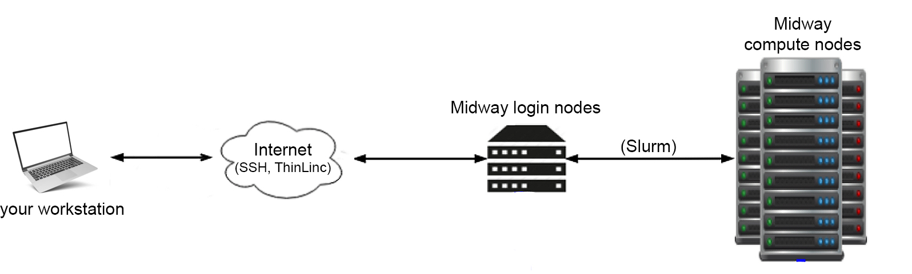

SSH (Secure shell)
Login nodes
When we say "connect to RCC resources," what we're really saying is connect to one of Midway's login nodes. The login nodes are physical parts of the Midway cluster that are connected to the internet and serve as the "foyer" to the system. You connect to the login nodes to manage data, download and install packages, and submit jobs to the compute nodes, as the diagram below depicts.

Upon logging in to Midway, you will automatically be connected to one of several login nodes.
Warning
The login nodes are NOT for computationally intensive work. For running computationally intensive programs, see Running Jobs on Midway.
Login and compute nodes are system-specific
Note that Midway2 compute nodes can only be accessed from Midway2 login nodes, and likewise Midway3 compute nodes can only be accessed from Midway3 login nodes.
Connecting with SSH
Secure Shell (SSH) is a protocol that provides secure command-line access to remote resources such as Midway.
Step 1: Open an SSH client === "macOS or Linux Users"ß
Open a **Terminal** (or iTerm2) window.
Open a Powershell window.
Mobaxterm
Windows users running a version of Windows older than Windows 10’s April 2018 release will have to download an SSH client to connect via SSH. We recommend the MobaXterm, client, although other options are available. Note that MobaXterm provides various functions such as direct file download which may offer a better experience than Powershell alone.
Step 2: At the command line enter:
ssh <CNetID>@midway2.rcc.uchicago.edu
ssh <CNetID>@midway3.rcc.uchicago.edu
Step 3: Provide your CNetID password when prompted. Duo two-factor autentication will request you select from the available 2FA options to authenticate to Midway.
Duo two-factor authentication for user
Enter a passcode or select one of the following options:
1) receive a push code on your Duo app,
2) Receive authentication through your phone number, and
3) get an SMS code.
Passcode or option (1-3):
Note on SSH key-based authentication
In compliance with University security guidelines, 2FA is required with limited exceptions. If you believe you have a justifiable need for SSH key pairs, please contact our Help Desk and describe your situation. Once your justification is received, it will be reviewed by the RCC security team and we will follow up with you as soon as possible.
Step 4: Choose from the available two-factor authentication options and finish the authentication process.

X11 Forwarding
X11 forwarding is a mechanism that allows you to forward a remote application's display to your local machine. To enable X11 forwarding when connecting to a Midway system with SSH, the -Y flag should be included:
ssh -Y <CNetID>@midway2.rcc.uchicago.edu
ssh -Y <CNetID>@midway3.rcc.uchicago.edu
Note for macOS users
The program XQuartz is required to enable trusted X11 forwarding on a Mac.
Data Sharing
File Permissions and Ownership
Linux divides file permissions into read (r), write (w) and execute (x). The read permission allows to view or copy file contents, write permission allows to modify file content, and execute permission allows to run the file. These three permissions are defined for each of the three owner types typically referred to as User (u), Group (g), and Others (o). User is a single user who is the owner of the file, Group is a collection of users that has access to the file and Others consists of all the users on the system. Only the owner of a file or a directory is allowed to change its permissions or the group name to one of their groups.
$ ls -l myfile.dat
-rw-r--r-- 1 john pi-shreck 8444 Feb 20 12:49 myfile.dat

To set up user permissions to a folder recursively, you can run the following command in the absolute mode, providing three permission bits for the User (7), Group (5), and Others (5):
$ chmod -R 755 myfolder
$ chmod -R u=rwx,go=rx myfolder
=), add (+) or remove (-) all or selected permissions for User (u), Group (g), or Others (o).
Let’s first summarize the default file system permission on Midway:
| Directory | Permissions | Permissions bits |
|---|---|---|
$HOME |
drwx------ | 700 – Accessible only to the owner |
$SCRATCH |
drwx------ | 700 – Accessible only to the owner |
/project/<PI CNetID> |
drwxrws--- | 770 – Read/write for the project group |
/project2/<PI CNetID> |
drwxrws--- | 770 – Read/write for the project group |
When new files or directories are created, the umask influences the default permissions of those files and directories. The default value of umask is set to 0002, which means that newly created files will have permissions of 664 (-rw-r--r--) and newly created directories will have permissions of 775 (drwxrwxr-x). In your home directory, the group owner will be set to your personal user group, the same as your CNetID, so you will still be the only user to access your files and directories. Note that in the project
directories, the group owner will be the same as the directory owner and the default permission of 2775 (drwxrwsr-x). Here the extra bit 2 will replace group permission x with s to enable any user executing the folder files with the same permissions as the group owner of the file.
Here is an example of what this means in practice:
$ ls -ld $HOME /project/rcc
drwx------ 108 wettstein wettstein 32768 2013-01-15 10:51 /home/wettstein
drwxrws--- 24 root rcc-staff 32768 2013-01-15 10:48 /project/rcc
$ touch $HOME/newfile /project/rcc/newfile
$ ls -l /project/rcc/newfile $HOME/newfile
-rw-rw-r-- 1 wettstein wettstein 0 2013-01-15 10:48 /home/wettstein/newfile
-rw-rw-r-- 1 wettstein rcc-staff 0 2013-01-15 10:48 /project/rcc/newfile
Both files are readable and writable by the group owner due to the default
umask, but the group owner differs due to the sticky bit being set on
/project/rcc. This applies only to newly created files and directories. If files or directories are moved from elsewhere, the ownership and permission may change.
To change recursively a group owner use chgrp -R:
$ chgrp -R pi-shreck myfolder
$ ls -l myfolder
-rwxrwxr-x 1 john pi-shreck 0 Feb 20 12:49 myfile.dat
-rwxrwxr-x 1 john pi-shreck 0 Feb 20 12:51 myfile2.dat
Sharing scripts with RCC
If you want RCC to help you troubleshoot a Slurm submission script, please ensure that the script is not located in your /home or /scratch directories that no one except you can access. Instead, please place your script and associated input files in a project directory and set read permission to the group owner pi-cnetid.
Advanced Access Control via ACL
Access control list (ACL) provides an additional, more flexible permission mechanism for file systems. It is designed to assist with UNIX file permissions. ACL allows you to give permissions to any disk resource for any user or group. For more information, please visit the ACL manual at https://wiki.archlinux.org/index.php/Access_Control_Lists
Note
At present, ACL is only available on Midway2.
General Instructions
This section discusses a more flexible mechanism to administer data permissions. Only Linux-based permissions are set for folders and files by default, as described in File System Permissions. However, this only supports the permissions at the owner/group/others level. A second mechanism is called “Access Control Lists” (ACL), which provides precise control over any data (files or directories) customizable for individual users or groups. Before applying ACL to your data, please read and understand the following caveats.
-
By default, no ACL is set for user data. ACL provides a highly flexible permission control, however, it also brings increased complexity to user access and management. PIs will normally want to share an entire project folder with all group members; for this, the Linux-based permissions are enough. We suggest that users implement ACL controls only when necessary. One example is to protect confidential data in the project space by allowing only certain users to access confidential directories or files.
-
After ACL is set, both Linux-based and ACL permissions will work together as a dual-guard system. The final effective access to data is granted only if permitted by both mechanisms. For example, if a folder is group-accessible to a user by Linux-based permission but restricted by ACL, the user cannot access this folder.
-
Be sure you have enough knowledge setting up access via Linux-based permissions and ACL, i.e. you understand what “users”, “groups” and each attribute in “rwx” mean and how to use them. Otherwise, please contact our Help Desk for assistance managing your data access. We are here and happy to help you set up the permissions to keep your data safe and accessible as required.
Examples
Sharing folders with a user within a group
Suppose there is a folder tree as below, and you want to allow the folder my_folder to be accessible by the user jim only,
and jim is already a member of your group rcctemp1:
/project2/rcctemp1
|- my_folder
|- other_stuff
Before using ACL, you need to confirm that this folder is permitted by all members in the group rcctemp1:
$ cd /project2
$ chgrp -R rcctemp1 my_folder
$ chmod -R 770 rcctemp1
$ cd rcctemp1
At this moment, the folder rcctemp1 becomes readable and writable by all members of group rcctemp1. Then, you can use
the setfacl command to control the individual users access precisely. First, you need to remove the default group
access by ACL:
$ setfacl -m g::--- my_folder
Although the command ls -l will still display group rwx access for the my_folder folder in the Linux-based permissions,
users cannot access it anymore due to the permission set by ACL. Then, you can grant the user jim access to the folder:
$ setfacl -m u:jim:rwx my_folder
At this step, the user jim has both read and write permissions to the folder my_folder. You can set up permissions for
each user the way you want.
To view the list of configured accesses on the folder my_folder, run:
$ getfacl my_folder
# file: my_folder
# owner: root
# group: rcctemp1
user::rwx
user:jim:rwx
group::---
mask::rwx
other::---
To revoke the permissions of the user jim to the folder:
$ setfacl -x u:jim my_folder
To clean up (remove) all ACL controls to the folder:
$ setfacl -b my_folder
Sharing folders with a user outside a group
Suppose you would like to share your folder /project2/pi-cnetid/my_own_folder/shared_data with another RCC user with CNetID coworkerA, who is not in your group pi-cnetid. As the owner of the folder, you can execute the following two commands
setfacl -Rm d:u:coworkerA:rw-,u:coworkerA:rw- /project2/pi-cnetid/my_own_folder/shared_data
setfacl -m u:coworkerA:--x /project2/pi-cnetid/my_own_folder
corworkerA to read and write. The second command adds execute permission to coworkerA so that coworkerA can access the parent folder /project2/pi-cnetid/my_own_folder but without read nor write permissions.
Multiple Affiliations
Both general users and PIs can join multiple pi-accounts by submitting a request. Once approved by the corresponding PI who owns the pi-account, a requestor will be added to the new group without losing membership in any existing groups. This will allow not only access to project folders but also the use of resources dedicated to the pi-account, including SUs and dedicated partitions.
Secure Copy (SCP) - Data transfer through SSH
macOS and Linux systems provide a scp command, which can be accessed from the command line.
To transfer files from your local computer to your home directory (see Data Storage for information on directories), open a terminal window and issue the command:
For single files:
scp <some file> <CNetID>@midway2.rcc.uchicago.edu:
scp <some file> <CNetID>@midway3.rcc.uchicago.edu:
For directories:
scp -r <some dir> <CNetID>@midway2.rcc.uchicago.edu:
scp -r <some dir> <CNetID>@midway3.rcc.uchicago.edu:
To transfer to a directory other than your home directory (for example, project):
scp -r <some dir> <CNetID>@midway2.rcc.uchicago.edu:/project2
scp -r <some dir> <CNetID>@midway3.rcc.uchicago.edu:/project
When prompted, enter your CNetID password.